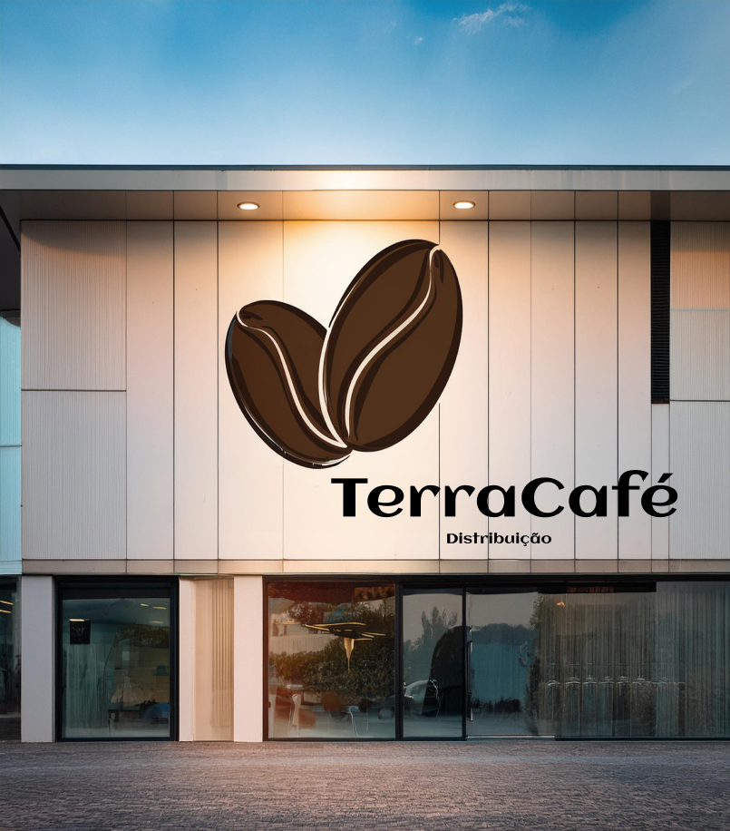

Cultivando qualidade, conectando pessoas, compartilhando paixões.
A TerraCafé Distribuição nasceu do amor pelo café e da paixão por conectar pessoas através de experiências sensoriais únicas.
A TerraCafé Distribuição nasceu do amor pelo café e da paixão por conectar pessoas através de experiências sensoriais únicas.
Tudo começou há 30 anos, quando João Martins, um jovem empreendedor e neto de produtores de café, decidiu transformar sua herança familiar em um negócio que honrasse a tradição e ao mesmo tempo inovasse no mercado de café.
Fascinado pelo aroma do café fresco e pelas histórias contadas por sua avó ao redor da mesa, ele sentiu que o café tinha o poder de unir as pessoas e criar momentos especiais.
Hoje, a TerraCafé Distribuição é uma marca reconhecida no mercado nacional e internacional, presente em cafeterias, restaurantes e nas casas de amantes do café em todo o mundo. Com um forte compromisso com a qualidade, inovação e sustentabilidade, a TerraCafé continua a crescer, mantendo a essência de uma empresa familiar que valoriza suas raízes e a conexão humana.
A TerraCafé sempre esteve na vanguarda da inovação. Em 2015 investimos em tecnologia de torrefação de ponta e abriu sua própria torrefadora, onde passou a desenvolver perfis de torra exclusivos. Ao mesmo tempo, a empresa adotou práticas sustentáveis em toda a cadeia produtiva, desde o uso consciente de água e energia até a redução de resíduos e a utilização de embalagens recicláveis.
Na TerraCafé Distribuição, o time é a alma do nosso negócio. Somos uma equipe diversa e apaixonada, formada por profissionais que compartilham um amor genuíno pelo café e um compromisso inabalável com a excelência. Cada membro do nosso time traz sua própria experiência e talento, contribuindo para fazer da TerraCafé uma referência no mercado.
Cada pessoa na TerraCafé Distribuição é movida por uma paixão em comum:
Trabalhamos juntos para inovar, crescer e compartilhar nossa paixão por café com o mundo.